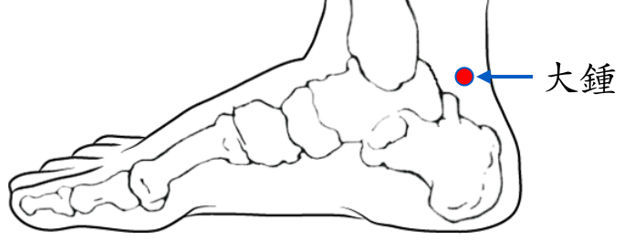

【穴位名稱】: 大鐘 (KI4)

【治療症狀】:
【取穴位置】: 足內側部，內踝後下方，跟腱附著部內側前方凹陷處，當太溪後下5分。《靈樞·經脈》：「當踝後繞跟，別走太陽」。《針灸甲乙經》：「在足跟後沖 (踵)中」；《素問·刺腰痛論》王冰註：「在足跟後沖中動脈」；《醫學入門》：「太溪下五分」；《針灸集成》：「在照海後一寸半」。
【針刺方法】: 直刺0.3～0.5吋。艾炷灸3～5壯，艾條溫灸10～15分鐘。
回前頁